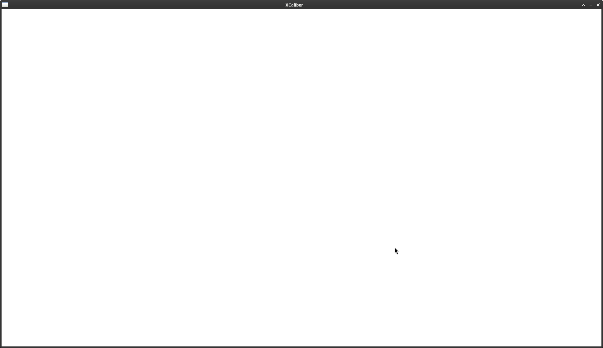
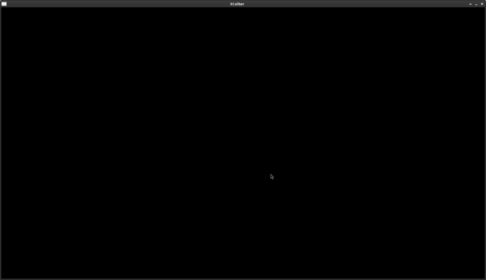
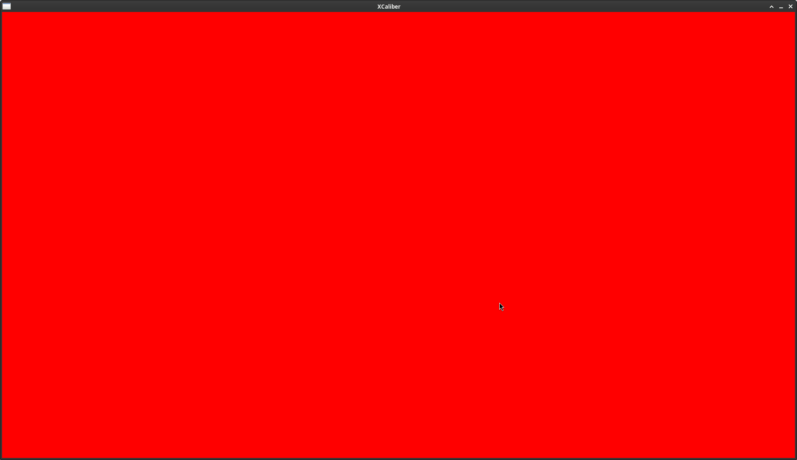

Using My Own Framebuffer to Render Something on an SDL3 Window
Sections
Basics (simplified)
It's just a regular buffer that contains data that represents each pixel on the screen on a single frame. That's why it's called frame-buffer.
What Kind of Data is Stored in a Framebuffer?Colours (RGB) and transparency (A) per pixel. Although transparency is optional.
What is The Size of a Framebuffer?It depends on the resolution of the window that I'm working with. Generally, it's just width * height.
Is One Framebuffer Enough?It is, but it comes with a big of problem. Screen tearing.
That is to say, since I'm updating a framebuffer at the same time I'm displaying it, then artifacts will show up on the window.
Here's a picture of that nasty effect (wikipedia):
It looks like broken glass.
To try to avoid these nasty visual effects I want to store information of two frames: the current and the next one.
What is Double Buffering?It's a technique where I reserve enough memory for a framebuffer such that I can store two frames worth of data.
Say I name the first half of the framebuffer as A, the other half as B.
The idea is to store the data of the current frame in A and display that whilst I'm computing the data for the next frame on B.
After I finish computing everything I need for B, I then swap these two buffers and tell SDL3 (or whatever) to render A.
However, using double buffering is not enough to avoid screen tearing.
What is VSync?It's a technique that aims to synchronise my application's frame rate (FPS) and my monitor's refresh rate (Hz) such that FPS <= Hz. By doing so, VSync prevents screen tearing, where two frames are being simultaneously rendered due to a mismatch of my application's frame rate and my monitor's refresh rate.
Why do some people disable VSync?I will be enumerating some of the reasons why people do it.
- Visual fluidity: if my application can run at 300 FPS and my monitor's refresh rate is 60 Hz then the game might look less fluid.
To be honest, I have been playing games with monitors of 120 and 144 Hz with and without VSync and I didn't notice any differences in fluidity, so I don't know. - Input lag: since my application has to be synchronised with my monitor, there might be a delay between an action done in game and its visual feedback on the screen. In fast-paced games like first person shooters, some people disable VSync to have the lowest latency possible. They are, of course, happy with the trade-off low-latency/screen tearing.
- Not having stable FPS: if my computer is not able to keep a stable number of frames per second, having VSync enabled can cause stuttering as it waits for the next refresh cycle. This is super annoying, so it's another reason why people disable VSync.
Creating a Framebuffer
The first step is creating a structure that contains the information about my framebuffer.
For the simplest framebuffer, I need:
- Buffer data: it's a huge array that contains information about each pixel, i.e colours and transparency.
Everything is stored sequentially, which means that to access a particular pixel I need to use a formula.
In this example I will be assuming I want to use 32 bit colours. - Size: the size of the framebuffer.
- Width: width of the framebuffer in pixels.
- Height: height of the framebuffer in pixels.
- Pitch (or stride): it's the number of bytes between the start of one row of pixels to the next one.
typedef struct {
uint32_t *pixels;
uint32_t pixel_count;
uint32_t byte_size;
uint32_t width;
uint32_t height;
uint32_t pitch;
} framebuffer;Now, create an instance of that structure and fill it up:
framebuffer fb;
fb.width = 800;
fb.height = 600;
fb.pitch = fb.width * sizeof(uint32_t);
fb.pixel_count = fb.width * fb.height;
fb.byte_size = fb.pixel_count * sizeof(uint32_t);
fb.pixels = malloc(fb.byte_size);
if (!fb.pixels) {
panic_and_abort("framebuffer alloc", "Couldn't get a chunk of memory for the framebuffer");
}That's it. The simplest framebuffer ever.
Filling a Framebuffer With a Colour
Let's try filling a framebuffer with different colours.
Let's start with black and white, because they're the easiest ones.
For white, I'd just do:
memset(fb.pixels, 0xFF, fb.byte_size);For black:
memset(fb.pixels, 0x00, fb.byte_size);However, to represent more 'complex' colours, I can't simply use memset. Why not? Because memset writes the same byte value to every byte in the buffer. The red colour, for instance, is represented as (0xFF, 0x00, 0x00), plus 0xFF for the alpha channel, so I'd need a way to write this pattern for every pixel.
A simple loop would do:
uint32_t const red = 0xFF0000FF;
for (uint32_t i = 0; i < fb.pixel_count; ++i) {
fb.pixels[i] = red;
}Even though this is cache friendly, it's slow.
For more performance I need to know ASM, SIMD and intrinsics.
Using my Framebuffer With SDL3
When using my own framebuffer, it's recommended to create an SDL texture. This texture will represent my framebuffer.
It's also recommended to pass the property SDL_TEXTUREACCESS_STREAMING when creating the texture, which means the texture will be updated regularly.
When specifying the pixel format, I choose SDL_PIXELFORMAT_RGBA8888 because this says: each pixel will be represented by 8 bits (1 byte). That is to say, 1 byte for each red, green, blue and alpha. In that order.
SDL_Texture *texture = SDL_CreateTexture(renderer, SDL_PIXELFORMAT_RGBA8888,
SDL_TEXTUREACCESS_STREAMING, fb.width,
fb.height);
if (!texture) {
panic_and_abort("Couldn't create an SDL Texture for my framebuffer", SDL_GetError());
}
Once I have the texture created, I just need to update it by calling SDL_UpdateTexture and then call the render functions from SDL:
SDL_UpdateTexture(texture, NULL, fb.pixels, (int)fb.pitch);
SDL_RenderClear(renderer);
SDL_RenderTexture(renderer, texture, NULL, NULL);
SDL_RenderPresent(renderer);Rendering
White
memset(fb.pixels, 0xFF, fb.byte_size);
SDL_UpdateTexture(texture, NULL, fb.pixels, (int)fb.pitch);
SDL_RenderClear(renderer);
SDL_RenderTexture(renderer, texture, NULL, NULL);
SDL_RenderPresent(renderer);Black
memset(fb.pixels, 0x00, fb.byte_size);
SDL_UpdateTexture(texture, NULL, fb.pixels, (int)fb.pitch);
SDL_RenderClear(renderer);
SDL_RenderTexture(renderer, texture, NULL, NULL);
SDL_RenderPresent(renderer);Red
uint32_t const red = 0xFF0000FF;
for (uint32_t i = 0; i < fb.pixel_count; ++i) {
fb.pixels[i] = red;
}
SDL_UpdateTexture(texture, NULL, fb.pixels, (int)fb.pitch);
SDL_RenderClear(renderer);
SDL_RenderTexture(renderer, texture, NULL, NULL);
SDL_RenderPresent(renderer);Screenshots
White
Black
Red
